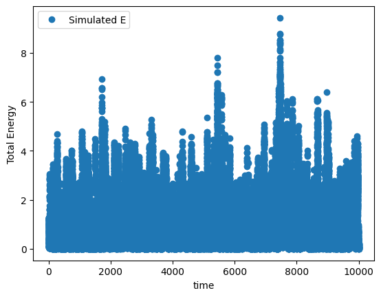
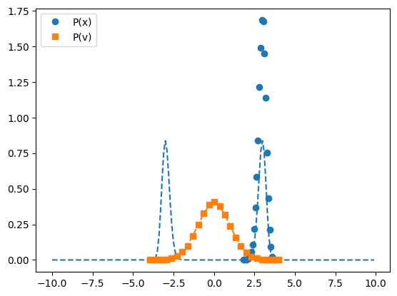
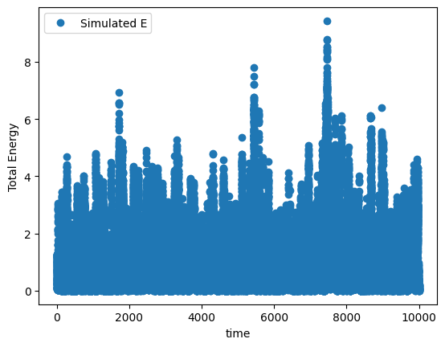
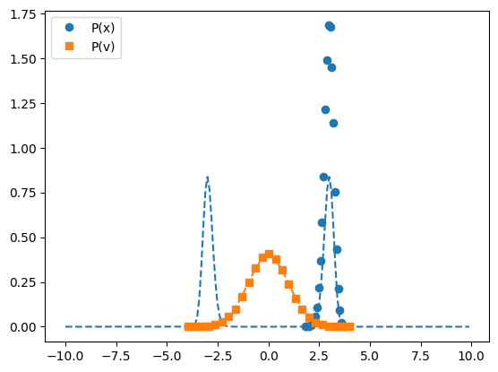

Langevin Dynamics#
Glen M. Hocky, New York University
Created Fall 2018, Last updated Spring 2023
Original version of this notebook as an assignment, plus one for standard molecular dynamics can be found at this link
Objectives#
In this notebook you will learn to use a Verlet scheme to simulate the dynamics of a 1D- Harmonic Oscillator and 1-D double well potential using Langevin Dynamics
You will observe the difference between underdamped and overdamped dynamics
You will observe what it means for ‘sampling’ to not be ‘ergodic’
#setup the notebook
%pylab inline
import numpy as np
%pylab is deprecated, use %matplotlib inline and import the required libraries.
Populating the interactive namespace from numpy and matplotlib
Part 1, set up the potential and plot it#
This function has to return the energy and force for a 1d harmonic potential. The potential is \(U(x) = 0.5 k (x - x_0)^2\) and \(F = -\frac{dU(x)}{dx}\)
#this function returns the energy and force on a particle from a harmonic potential
def harmonic_oscillator_energy_force(x,k=1,x0=0):
#calculate the energy on force on the right hand side of the equal signs
energy = 0.5*k*(x-x0)**2
force = -k*(x-x0)
return energy, force
#this function will plot the energy and force
#it is very general since it uses a special python trick of taking arbitrary named arguments (**kwargs)
#and passes them on to a specified input function
def plot_energy_force(function, xmin=-3,xmax=3,spacing=0.1,**kwargs):
x_points = np.arange(xmin,xmax+spacing,spacing)
energies, forces = function(x_points,**kwargs)
label = 'U(x)'
for arg in kwargs:
label=label+', %s=%s'%(arg,str(kwargs[arg]))
p = plt.plot(x_points,energies,label=label)
plt.plot(x_points,forces,label='',color=p[0].get_color(),linestyle='--')
plt.legend(loc=0)
#we can plot the energy (solid) and forces (dashed) to see if it looks right
plot_energy_force(harmonic_oscillator_energy_force,k=1)
plot_energy_force(harmonic_oscillator_energy_force,k=2)
Part 2, code langevin dynamics#
Now you will implement the BAOAB scheme of Leimkuhler and Matthews (JCP, 2013)
The following equations are repeated (Do B,A,O,A,B then repeat) to move forward in time. The A and B steps represent increments by half a time step.
B: \(v(t) \leftarrow v(t) + \frac{F(t)}{m} (dt/2)\)
A: \(x(t) \leftarrow x(t) + v(t) (dt/2)\)
The differential equation for the O process is
\(\frac{d v(t)}{dt} = - \gamma v dt + \sqrt{2 \gamma k_B T/m} d W\)
(\(dW\) is a random differential that samples a gaussian)
Solving this tells us the update rule:
O: \(v(t) \leftarrow e^{-\gamma dt} v(t) + R(t)\sqrt{k_B T/m} \sqrt{1-e^{-2\gamma dt}} \)
where \(R(t)\) is a gaussian random number with mean zero and standard-deviation 1.
In the following, I’m setting the mass \(m=1\)
#this is step A
def position_update(x,v,dt):
x_new = x + v*dt/2.
return x_new
#this is step B
def velocity_update(v,F,dt):
v_new = v + F*dt/2.
return v_new
def random_velocity_update(v,gamma,kBT,dt):
R = np.random.normal()
c1 = np.exp(-gamma*dt)
c2 = np.sqrt(1-c1*c1)*np.sqrt(kBT)
v_new = c1*v + R*c2
return v_new
def baoab(potential, max_time, dt, gamma, kBT, initial_position, initial_velocity,
save_frequency=3, **kwargs ):
x = initial_position
v = initial_velocity
t = 0
step_number = 0
positions = []
velocities = []
total_energies = []
save_times = []
while(t<max_time):
# B
potential_energy, force = potential(x,**kwargs)
v = velocity_update(v,force,dt)
#A
x = position_update(x,v,dt)
#O
v = random_velocity_update(v,gamma,kBT,dt)
#A
x = position_update(x,v,dt)
# B
potential_energy, force = potential(x,**kwargs)
v = velocity_update(v,force,dt)
if step_number%save_frequency == 0 and step_number>0:
e_total = .5*v*v + potential_energy
positions.append(x)
velocities.append(v)
total_energies.append(e_total)
save_times.append(t)
t = t+dt
step_number = step_number + 1
return save_times, positions, velocities, total_energies
Part 3, run Langevin Dynamics simulation of a harmonic oscillator#
Change
my_kand see how it changes the frequencySet
my_k=1, and changemy_gamma. Try lower values like 0.0001, 0.001, and higher values like 0.1, 1, 10. Do you see how underdamped, low \(\gamma\), looks more like standard harmonic oscillator, while overdamped, high \(\gamma\) looks more like a random walk?
my_k = 2
my_max_time = 100
initial_position = .1
initial_velocity = .5
my_gamma=10
my_kBT=0.25
my_dt=0.01
times, positions, velocities, total_energies = baoab(harmonic_oscillator_energy_force, \
my_max_time, my_dt, my_gamma, my_kBT, \
initial_position, initial_velocity,\
k=my_k)
plt.plot(times,velocities,marker='',label='velocity',linestyle='-')
plt.plot(times,positions,marker='',label='position',linestyle='-')
xlabel('time')
legend(loc='upper center')
plt.figure()
plt.plot(times,total_energies,marker='o',linestyle='',label='Simulated E')
xlabel('time')
ylabel("Total Energy")
legend()
<matplotlib.legend.Legend at 0x7f8ad83201c0>
Part 4, Histogram Position and Velocity#
What is the probability of seeing a given position or velocity?
Now we are supposedly sampling the canonical distribution, so we should have:
\(P(x) = \frac{1}{\sqrt{2 \pi k_B T /k}} e^{-\frac{k (x-x_0)^2}{2 k_B T}}\)
\(P(v) = \frac{1}{\sqrt{2 \pi k_B T /m}} e^{-\frac{ m v^2}{2 k_B T}}\)
\(P(E) = e^{-E/k_B T}/\int e^{-E/k_B T} dE = \frac{1}{k_B T} e^{-E/k_B T}\)
Set gamma to overdamped above and run the following cell
The histograms will be compared to the exact formulas.
def bin_centers(bin_edges):
return (bin_edges[1:]+bin_edges[:-1])/2.
def gaussian_x(x,k,kBT):
denominator = np.sqrt(2*np.pi*kBT/k)
numerator = np.exp(-k*(x**2)/(2*kBT))
return numerator/denominator
def gaussian_v(v,kBT):
denominator = np.sqrt(2*np.pi*kBT)
numerator = np.exp(-(v**2)/(2*kBT))
return numerator/denominator
#to get a good histogram, we need to run a lot longer than before
my_max_time = 25000
times, positions, velocities, total_energies = baoab(harmonic_oscillator_energy_force,
my_max_time, my_dt, my_gamma, my_kBT, \
initial_position, initial_velocity,\
k=my_k)
#let's only use data from the second half of the trajectory, so it can equilibrate
dist_hist, dist_bin_edges = np.histogram(positions[-len(positions)//2:],bins=20,density=True)
vel_hist, vel_bin_edges = np.histogram(velocities[-len(velocities)//2:],bins=20,density=True)
e_hist, e_bin_edges = np.histogram(total_energies[-len(total_energies)//2:],bins=20,density=True)
ideal_prediction_x = gaussian_x(x=bin_centers(dist_bin_edges),k=my_k,kBT=my_kBT )
p = plot(bin_centers(dist_bin_edges), dist_hist,marker='o',label='P(x)',linestyle='')
plot(bin_centers(dist_bin_edges), ideal_prediction_x,linestyle='--',label='', color=p[0].get_color())
ideal_prediction_v = gaussian_v(v=bin_centers(vel_bin_edges),kBT=my_kBT )
p = plot(bin_centers(vel_bin_edges), vel_hist,marker='s',label='P(v)',linestyle='')
plot(bin_centers(vel_bin_edges), ideal_prediction_v,linestyle='--',label='', color=p[0].get_color())
legend(loc='upper left')
plt.figure()
p = plot(bin_centers(e_bin_edges), e_hist,marker='s',label='P(E)',linestyle='')
#compute the energy histogram values to the boltzman factors for the observed energies
plot(bin_centers(e_bin_edges), np.exp(-bin_centers(e_bin_edges)/my_kBT)/my_kBT,linestyle='--',color=p[0].get_color())
plt.yscale('log')
plt.xlabel("E")
plt.ylabel("P(E)")
Text(0, 0.5, 'P(E)')
Simulate a double well potential#
Let’s do a simulation in a double well also
\(U(x) = \frac{k}{4} (x-a)^2 (x+a)^2\)
This potential has a minimum at \(x=a\) and \(x=-a\). It also has a barrier at \(x=0\).
#this function returns the energy and force on a particle from a double well
def double_well_energy_force(x,k,a):
#calculate the energy on force on the right hand side of the equal signs
energy = 0.25*k*((x-a)**2) * ((x+a)**2)
force = -k*x*(x-a)*(x+a)
return energy, force
plot_energy_force(double_well_energy_force, xmin=-4,xmax=+4, k=1, a=2)
axhline(0,linestyle='--',color='black')
axvline(0,linestyle='--',color='black')
ylim(-10,10)
(-10.0, 10.0)
Part 5, run langevin verlet dynamics on the double well#
We will see what happens when we change temperature my_KBT and barrier height my_a.
Run the simulation as is and see that the particle samples both the left and right sides of the well
Lower the temperature to 0.1, what happens?
Keep the temperature at 1.0, and raise \(a\) to 3, what happens?
When is the sampling ergodic? This means that all configurations are accessible.
my_k = 1
#CHANGE THESE
my_kBT = 1.0
my_a = 3
plot_energy_force(double_well_energy_force, xmin=-4,xmax=+4, k=my_k, a=my_a)
ylim(-10,10)
plt.figure()
my_initial_position = my_a
my_initial_velocity = 1
my_gamma = 0.1
my_dt = 0.05
my_max_time = 10000
times, positions, velocities, total_energies = baoab(double_well_energy_force,
my_max_time, my_dt, my_gamma, my_kBT,\
my_initial_position, my_initial_velocity,\
k=my_k, a=my_a)
plt.plot(times,positions,marker='o',label='position',linestyle='')
plt.plot(times,velocities,marker='s',label='velocity',linestyle='')
xlabel('time')
legend(loc='upper center')
plt.figure()
initial_energy = total_energies[0]
plt.plot(times,total_energies,marker='o',linestyle='',label='Simulated E')
xlabel('time')
ylabel("Total Energy")
legend()
# histogramming the results
plt.figure()
dist_hist, dist_bin_edges = np.histogram(positions,bins=25,density=True)
vel_hist, vel_bin_edges = np.histogram(velocities,bins=25,density=True)
p = plot(bin_centers(dist_bin_edges), dist_hist,marker='o',label='P(x)',linestyle='')
#test against exact prediction
dd = 0.1
test_bin_positions = np.arange(-10,10,dd)
double_well_energies, double_well_froces = double_well_energy_force(test_bin_positions,my_k,my_a)
plot(test_bin_positions, np.exp(-double_well_energies/my_kBT)/np.sum(dd*np.exp(-double_well_energies/my_kBT)),\
linestyle='--',color=p[0].get_color())
p = plot(bin_centers(vel_bin_edges), vel_hist,marker='s',label='P(v)',linestyle='')
ideal_prediction_v = gaussian_v(v=bin_centers(vel_bin_edges),kBT=my_kBT )
plot(bin_centers(vel_bin_edges), ideal_prediction_v,linestyle='--',label='', color=p[0].get_color())
legend(loc='upper left')
<matplotlib.legend.Legend at 0x7f8ad82470a0>
 


